Splat simulation parameters
Luke Zappia
Last updated: 19 October 2020
Source:vignettes/splat_params.Rmd
splat_params.RmdThis vignette describes the Splat simulation model and the parameters it uses in more detail.
library("splatter")
#> Loading required package: SingleCellExperiment
#> Loading required package: SummarizedExperiment
#> Loading required package: MatrixGenerics
#> Loading required package: matrixStats
#>
#> Attaching package: 'MatrixGenerics'
#> The following objects are masked from 'package:matrixStats':
#>
#> colAlls, colAnyNAs, colAnys, colAvgsPerRowSet, colCollapse,
#> colCounts, colCummaxs, colCummins, colCumprods, colCumsums,
#> colDiffs, colIQRDiffs, colIQRs, colLogSumExps, colMadDiffs,
#> colMads, colMaxs, colMeans2, colMedians, colMins, colOrderStats,
#> colProds, colQuantiles, colRanges, colRanks, colSdDiffs, colSds,
#> colSums2, colTabulates, colVarDiffs, colVars, colWeightedMads,
#> colWeightedMeans, colWeightedMedians, colWeightedSds,
#> colWeightedVars, rowAlls, rowAnyNAs, rowAnys, rowAvgsPerColSet,
#> rowCollapse, rowCounts, rowCummaxs, rowCummins, rowCumprods,
#> rowCumsums, rowDiffs, rowIQRDiffs, rowIQRs, rowLogSumExps,
#> rowMadDiffs, rowMads, rowMaxs, rowMeans2, rowMedians, rowMins,
#> rowOrderStats, rowProds, rowQuantiles, rowRanges, rowRanks,
#> rowSdDiffs, rowSds, rowSums2, rowTabulates, rowVarDiffs, rowVars,
#> rowWeightedMads, rowWeightedMeans, rowWeightedMedians,
#> rowWeightedSds, rowWeightedVars
#> Loading required package: GenomicRanges
#> Loading required package: stats4
#> Loading required package: BiocGenerics
#> Loading required package: generics
#>
#> Attaching package: 'generics'
#> The following objects are masked from 'package:base':
#>
#> as.difftime, as.factor, as.ordered, intersect, is.element, setdiff,
#> setequal, union
#>
#> Attaching package: 'BiocGenerics'
#> The following objects are masked from 'package:stats':
#>
#> IQR, mad, sd, var, xtabs
#> The following objects are masked from 'package:base':
#>
#> anyDuplicated, aperm, append, as.data.frame, basename, cbind,
#> colnames, dirname, do.call, duplicated, eval, evalq, Filter, Find,
#> get, grep, grepl, is.unsorted, lapply, Map, mapply, match, mget,
#> order, paste, pmax, pmax.int, pmin, pmin.int, Position, rank,
#> rbind, Reduce, rownames, sapply, saveRDS, table, tapply, unique,
#> unsplit, which.max, which.min
#> Loading required package: S4Vectors
#>
#> Attaching package: 'S4Vectors'
#> The following object is masked from 'package:utils':
#>
#> findMatches
#> The following objects are masked from 'package:base':
#>
#> expand.grid, I, unname
#> Loading required package: IRanges
#> Loading required package: Seqinfo
#> Loading required package: Biobase
#> Welcome to Bioconductor
#>
#> Vignettes contain introductory material; view with
#> 'browseVignettes()'. To cite Bioconductor, see
#> 'citation("Biobase")', and for packages 'citation("pkgname")'.
#>
#> Attaching package: 'Biobase'
#> The following object is masked from 'package:MatrixGenerics':
#>
#> rowMedians
#> The following objects are masked from 'package:matrixStats':
#>
#> anyMissing, rowMedians
library("scater")
#> Loading required package: scuttle
#> Loading required package: ggplot2
library("ggplot2")The base Splat model
This figure, taken from the Splatter publication, describes the core of the Splat simulation model.

The Splat simulation uses a hierarchical probabilistic where different aspects of a dataset are generated from appropriate statistical distributions. The first stage generates a mean expression level for each gene. These are originally chosen from a Gamma distribution. For some genes that are selected to be outliers with high expression a factor is generated from a log-normal distribution. These factors are then multiplied by the median gene mean to create new means for those genes.
The next stage incorporates variation in the counts per cell. An expected library size (total counts) is chosen for each cell from a log-normal distribution. The library sizes are then used to scale the gene means for each cell, resulting in a range a counts per cell in the simulated dataset. The gene means are then further adjusted to enforce a relationship between the mean expression level and the variability.
The final cell by gene matrix of gene means is then used to generate a count matrix using a Poisson distribution. The result is a synthetic dataset consisting of counts from a Gamma-Poisson (or negative-binomial) distribution. An additional optional step can be used to replicate a “dropout” effect. A probability of dropout is generated using a logistic function based on the underlying mean expression level. A Bernoulli distribution is then used to create a dropout matrix which sets some of the generated counts to zero.
The model described here will generate a single population of cells but the Splat simulation has been designed to be as flexible as possible and can create scenarios including multiple groups of cells (cell types), continuous paths between cell types and multiple experimental batches. The parameters used to create these types of simulations and how they interact with the model are described below.
Splat simulation parameters
Within Splatter the parameters for the Splat simulation model are
held in the SplatParams object. Let’s create one of these
objects and see what it looks like.
params <- newSplatParams()
params
#> A Params object of class SplatParams
#> Parameters can be (estimable) or [not estimable], 'Default' or 'NOT DEFAULT'
#> Secondary parameters are usually set during simulation
#>
#> Global:
#> (Genes) (Cells) [SEED]
#> 10000 100 841111
#>
#> 29 additional parameters
#>
#> Batches:
#> [Batches] [Batch Cells] [Location] [Scale] [Remove]
#> 1 100 0.1 0.1 FALSE
#>
#> Mean:
#> (Rate) (Shape)
#> 0.3 0.6
#>
#> Library size:
#> (Location) (Scale) (Norm)
#> 11 0.2 FALSE
#>
#> Exprs outliers:
#> (Probability) (Location) (Scale)
#> 0.05 4 0.5
#>
#> Groups:
#> [Groups] [Group Probs]
#> 1 1
#>
#> Diff expr:
#> [Probability] [Down Prob] [Location] [Scale]
#> 0.1 0.5 0.1 0.4
#>
#> BCV:
#> (Common Disp) (DoF)
#> 0.1 60
#>
#> Dropout:
#> [Type] (Midpoint) (Shape)
#> none 0 -1
#>
#> Paths:
#> [From] [Steps] [Skew] [Non-linear] [Sigma Factor]
#> 0 100 0.5 0.1 0.8Like all the parameter objects in Splatter printing this object
displays all the parameters required for this simulation. As we haven’t
set any of the parameters the default values are shown but if we were to
change any of them they would be highlighted. We can also see which
parameters can be estimated by the Splat estimation procedure and which
can’t. The default values have been chosen to be fairly realistic but it
is recommended that estimation is used to get a simulation that is more
like the data you are interested in. Parameters can be modified by
setting them in the SplatParams object or by providing them
directly to the simulation function.
The rest of this section provides details of all this parameters and explains how they can be used with examples.
Global parameters
These parameters are used in every simulation model and control global features of the dataset produced.
nGenes - Number of genes
The number of genes to simulate.
# Set the number of genes to 1000
params <- setParam(params, "nGenes", 1000)
sim <- splatSimulate(params, verbose = FALSE)
dim(sim)
#> [1] 1000 100
nCells - Number of cells
The number of genes to simulate. In the Splat simulation this cannot
be set directly but must be controlled using the batchCells
parameter.
seed - Random seed
Seed to use for generating random numbers including selecting values from distributions. By changing this value multiple simulated datasets with the same parameters can be produced. Simulations produced using the same set of parameters and random seed should be identical but there may be differences between operating systems, software versions etc.
Batch parameters
These parameters control experimental batches in the simulated dataset. The overall effect of how batch effects are included in the model is similar to technical replicates (i.e. the same biological sample sequenced multiple times). This means that the underlying structure is consistent between batches but a global technical signature is added may separate them.
nBatches - Number of batches
The number of batches in the simulation. This cannot be set directly
but is controlled by setting batchCells.
batchCells - Cells per batch
A vector specifying the number of cells in each batch. The number of
batches (nBatches) is equal to the length of the vector and
the number of cells (nCells) is equal to the sum.
# Simulation with two batches of 100 cells
sim <- splatSimulate(params, batchCells = c(100, 100), verbose = FALSE)
# PCA plot using scater
sim <- logNormCounts(sim)
sim <- runPCA(sim)
plotPCA(sim, colour_by = "Batch")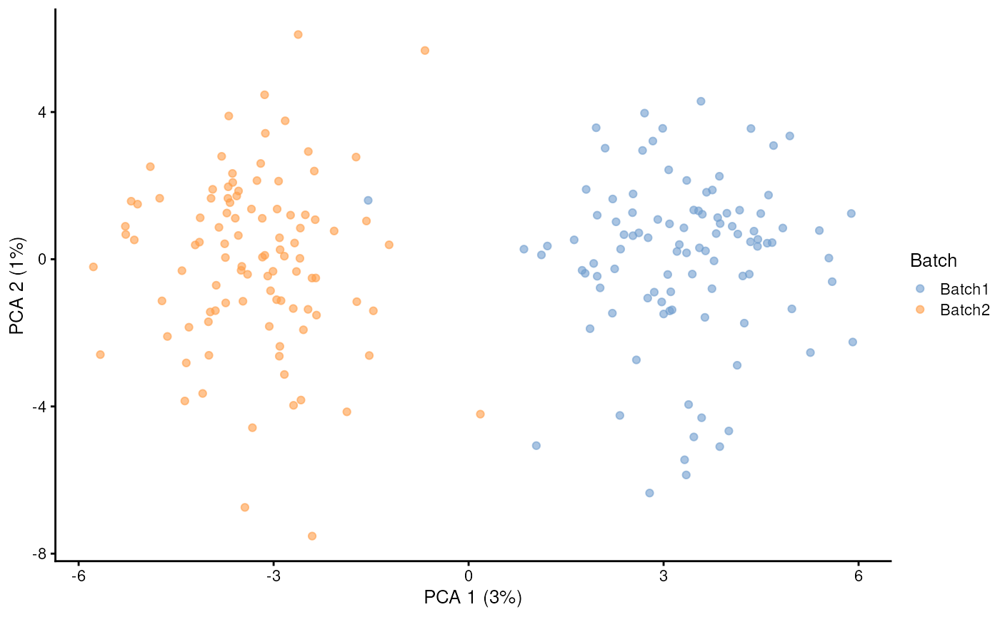
batch.facLoc - Batch factor location and
batch.facScale - Batch factor scale
Batches are specified by generating a small scaling factor for each gene in each batch from a log-normal distribution. These factors are then applied to the underlying gene means in each batch. Modifying these parameters affects how different the batches are from each other by generating bigger or smaller factors.
# Simulation with small batch effects
sim1 <- splatSimulate(
params,
batchCells = c(100, 100),
batch.facLoc = 0.001,
batch.facScale = 0.001,
verbose = FALSE
)
sim1 <- logNormCounts(sim1)
sim1 <- runPCA(sim1)
plotPCA(sim1, colour_by = "Batch") + ggtitle("Small batch effects")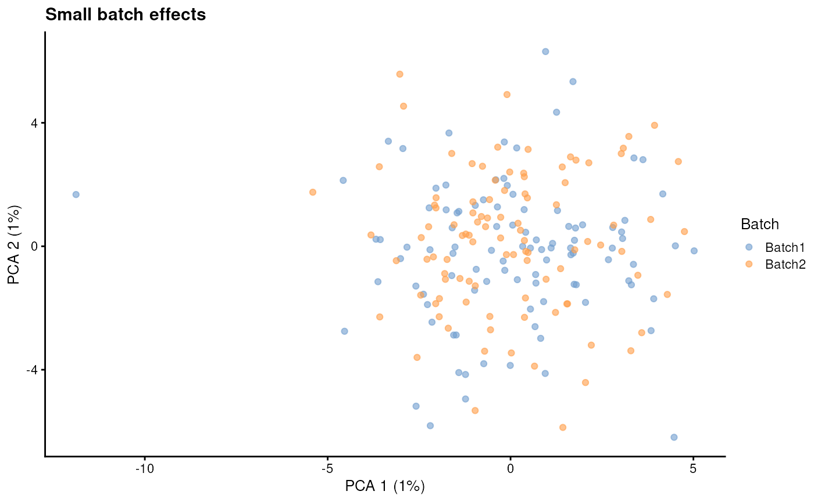
# Simulation with big batch effects
sim2 <- splatSimulate(
params,
batchCells = c(100, 100),
batch.facLoc = 0.5,
batch.facScale = 0.5,
verbose = FALSE
)
sim2 <- logNormCounts(sim2)
sim2 <- runPCA(sim2)
plotPCA(sim2, colour_by = "Batch") + ggtitle("Big batch effects")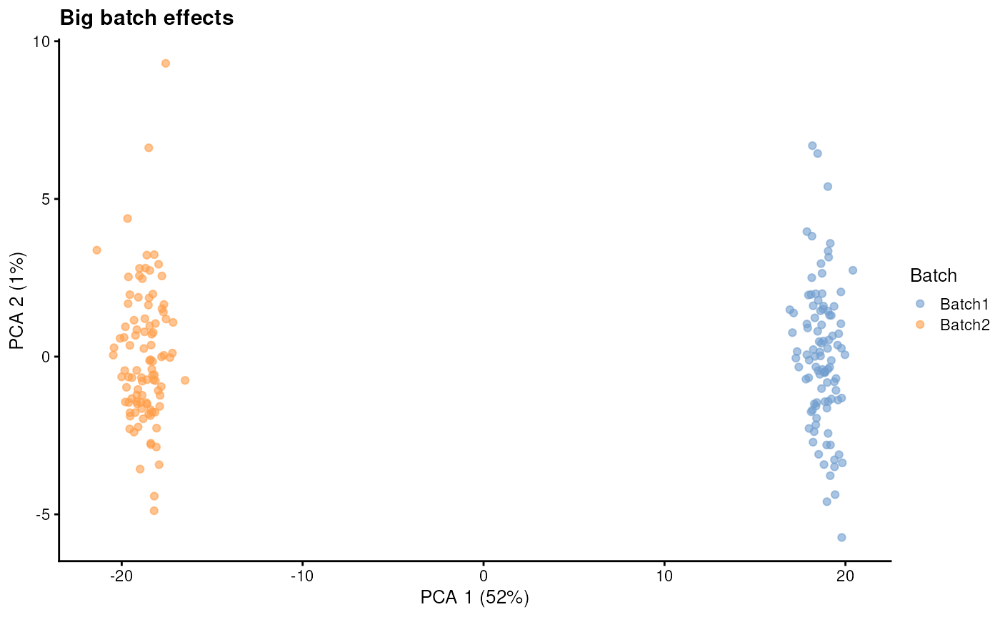
batch.rmEffect - Remove batch effect
Setting batch.rmEffect to TRUE produces a
dataset that is (approximately) identical to when
batch.rmEffect is FALSE but with the batch
effect removed. This can be used as the ground truth for evaluating
batch correction.
sim1 <- splatSimulate(
params,
batchCells = c(100, 100),
batch.rmEffect = FALSE,
verbose = FALSE
)
sim1 <- logNormCounts(sim1)
sim1 <- runPCA(sim1)
plotPCA(sim1, colour_by = "Batch") + ggtitle("With batch effects")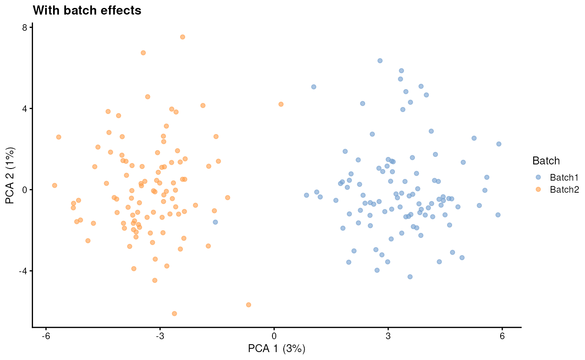
sim2 <- splatSimulate(
params,
batchCells = c(100, 100),
batch.rmEffect = TRUE,
verbose = FALSE
)
sim2 <- logNormCounts(sim2)
sim2 <- runPCA(sim2)
plotPCA(sim2, colour_by = "Batch") + ggtitle("Batch effects removed")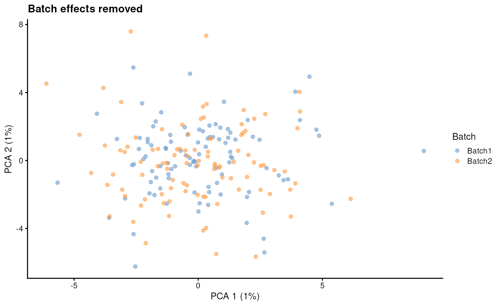
Mean parameters
These parameters control the distribution that is used to generate the underlying original gene means.
mean.shape - Mean shape and mean.rate -
Mean rate
These parameters control the Gamma distribution that gene means are drawn from. The relationship between shape and rate can be complex and it is often better to use values estimated from a real dataset than to try and manually set them. Although these parameters control the base gene means the means in the final simulation will depend upon other parts of the model, particularly the simulated total counts per cell (library sizes).
Library size parameters
These parameters control the expected number of counts for each cell. Note that because of sampling the actual counts per cell in the final simulation may be different. Turning on the dropout effect will also effect this. We use the term “library size” here for consistency but expected total counts would be more appropriate.
lib.loc - Library size location and
lib.scale - Library size scale
These parameters control the shape of the distribution that is used
to generate library sizes for each cell. Increasing lib.loc
will lead to more counts per cell and increasing lib.scale
will result in more variability in the counts per cell.
Expression outlier parameters
When developing the Splat simulation we found that while the Gamma distribution was generally a good match for gene means for some datasets it did not properly capture highly expressed genes. For this reason we added expression outliers to the Splat model.
out.prob - Expression outlier probability
This parameter controls the probability that genes will be selected to be expression outliers. Higher values will results in more outlier genes.
# Few outliers
sim1 <- splatSimulate(out.prob = 0.001, verbose = FALSE)
ggplot(
as.data.frame(rowData(sim1)),
aes(x = log10(GeneMean), fill = OutlierFactor != 1)
) +
geom_histogram(bins = 100) +
ggtitle("Few outliers")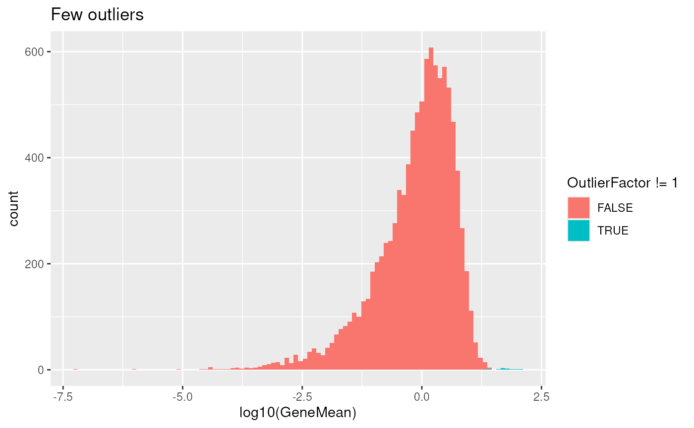
# Lots of outliers
sim2 <- splatSimulate(out.prob = 0.2, verbose = FALSE)
ggplot(
as.data.frame(rowData(sim2)),
aes(x = log10(GeneMean), fill = OutlierFactor != 1)
) +
geom_histogram(bins = 100) +
ggtitle("Lots of outliers")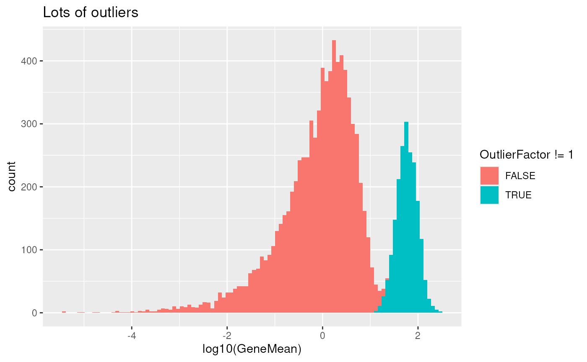
out.facLoc - Expression outlier factor location and
out.facScale - Expression outlier factor scale
The expression outlier factors are drawn from a log-normal distribution controlled by these parameters. The generated factors are applied to the median mean expression rather than the existing mean for the selected genes. This is to be consistent with the estimation procedure for these factors and to make sure that the final means are outliers. For example to avoid the situation where a factor is applied to a lowly expressed gene, making it just moderately expressed rather than an expression outlier.
Group parameters
Up until this stage of the simulation only a single population of cells is considered but we often want to simulate datasets with multiple kinds of cells. We do this by assigning cells to groups.
nGroups - Number of groups
The number of groups to simulate. This parameter cannot be set
directly and is controlled using group.prob.
group.prob - Group probabilities
A vector giving the probability that cells will be assigned to
groups. The length of the vector gives the number of groups
(nGroups) and the probabilities must sum to 1. Adjusting
the number and relative values of the probabilities changes the number
and relative sizes of the groups. To simulate groups we also need to use
the splatSimulateGroups function or set
method = "groups".
params.groups <- newSplatParams(batchCells = 500, nGenes = 1000)
# One small group, one big group
sim1 <- splatSimulateGroups(
params.groups,
group.prob = c(0.9, 0.1),
verbose = FALSE
)
sim1 <- logNormCounts(sim1)
sim1 <- runPCA(sim1)
plotPCA(sim1, colour_by = "Group") + ggtitle("One small group, one big group")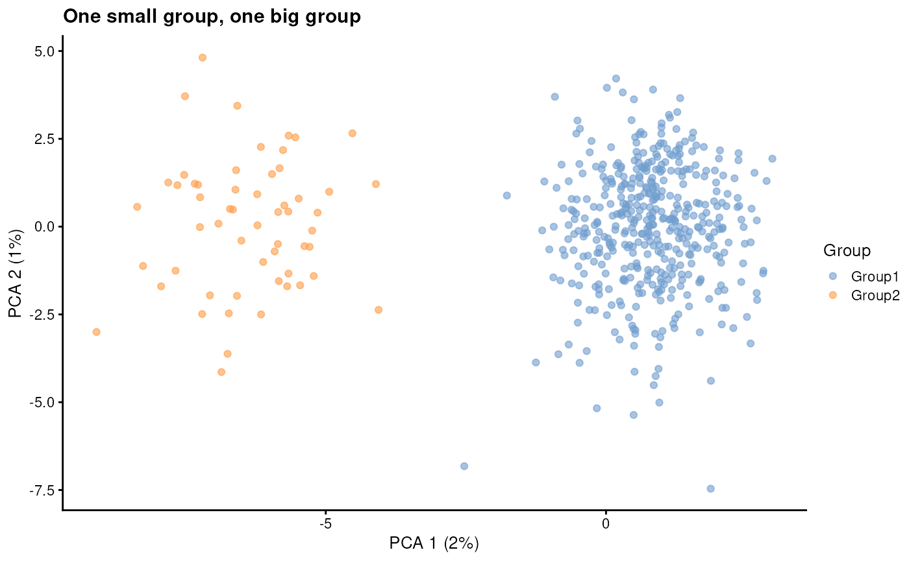
# Five groups
sim2 <- splatSimulateGroups(
params.groups,
group.prob = c(0.2, 0.2, 0.2, 0.2, 0.2),
verbose = FALSE
)
sim2 <- logNormCounts(sim2)
sim2 <- runPCA(sim2)
plotPCA(sim2, colour_by = "Group") + ggtitle("Five groups")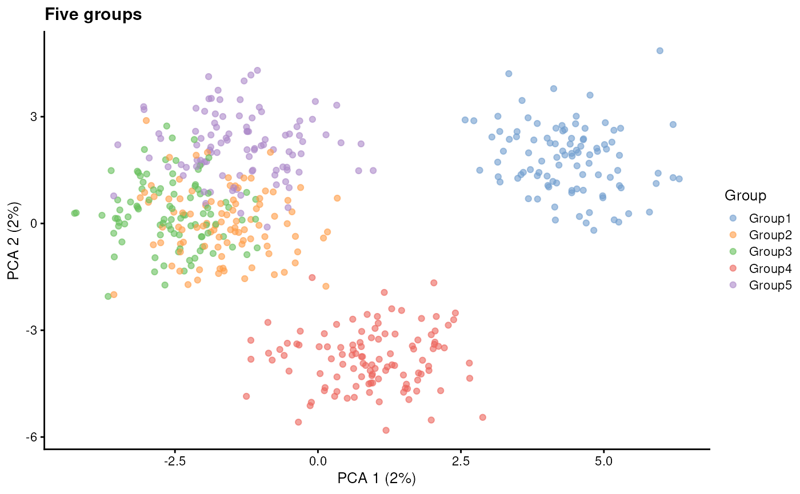
Note: Once there are more than three or four groups it becomes difficult to properly view them in PCA space. We use PCA here for simplicity but generally a non-linear dimensionality reduction such as t-SNE or UMAP is a more useful way to visualise the groups.
Differential expression parameters
Different groups are created by modifying the base expression levels of selected genes. The process for doing this is to simulate differential expression (DE) between each group and a fictional base cell. Altering the differential expression parameters controls how similar groups are to each other.
de.prob - DE probability
This parameter controls the probability that a gene will be selected to be differentially expressed.
# Few DE genes
sim1 <- splatSimulateGroups(
params.groups,
group.prob = c(0.5, 0.5),
de.prob = 0.01,
verbose = FALSE
)
sim1 <- logNormCounts(sim1)
sim1 <- runPCA(sim1)
plotPCA(sim1, colour_by = "Group") + ggtitle("Few DE genes")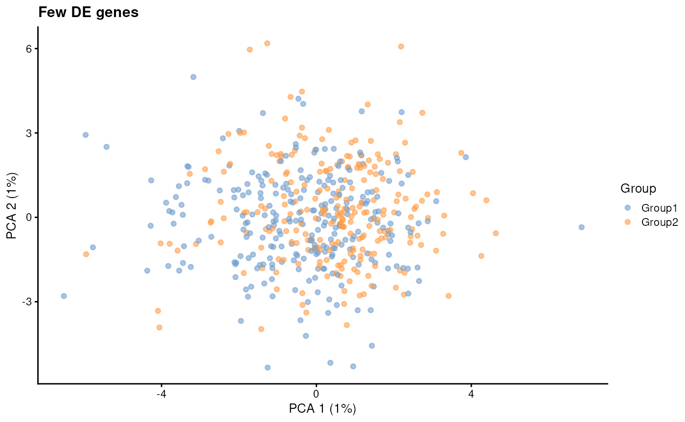
# Lots of DE genes
sim2 <- splatSimulateGroups(
params.groups,
group.prob = c(0.5, 0.5),
de.prob = 0.3,
verbose = FALSE
)
sim2 <- logNormCounts(sim2)
sim2 <- runPCA(sim2)
plotPCA(sim2, colour_by = "Group") + ggtitle("Lots of DE genes")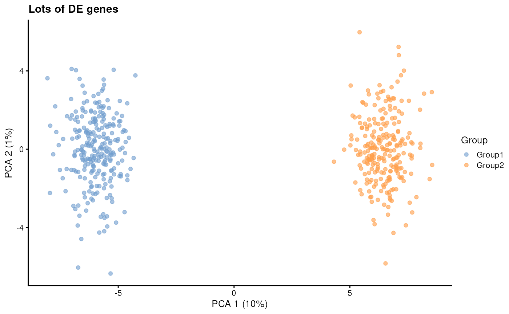
de.downProb - Down-regulation probability
A selected DE gene can be either down-regulated (has a factor less than one) or up-regulated (has a factor greater than one). This parameter controls the probability that a selected gene will be down-regulated.
de.facLoc - DE factor location and
de.facScale - DE factor scale
Differential expression factors are produced from a log-normal distribution in a similar way to batch effect factors and expression outlier factors. Changing these parameters can result in more or less extreme differences between groups.
# Small DE factors
sim1 <- splatSimulateGroups(
params.groups,
group.prob = c(0.5, 0.5),
de.facLoc = 0.01,
verbose = FALSE
)
sim1 <- logNormCounts(sim1)
sim1 <- runPCA(sim1)
plotPCA(sim1, colour_by = "Group") + ggtitle("Small DE factors")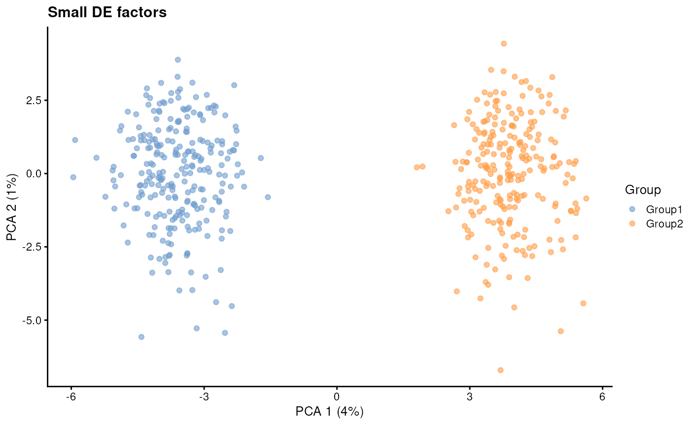
# Big DE factors
sim2 <- splatSimulateGroups(
params.groups,
group.prob = c(0.5, 0.5),
de.facLoc = 0.3,
verbose = FALSE
)
sim2 <- logNormCounts(sim2)
sim2 <- runPCA(sim2)
plotPCA(sim2, colour_by = "Group") + ggtitle("Big DE factors")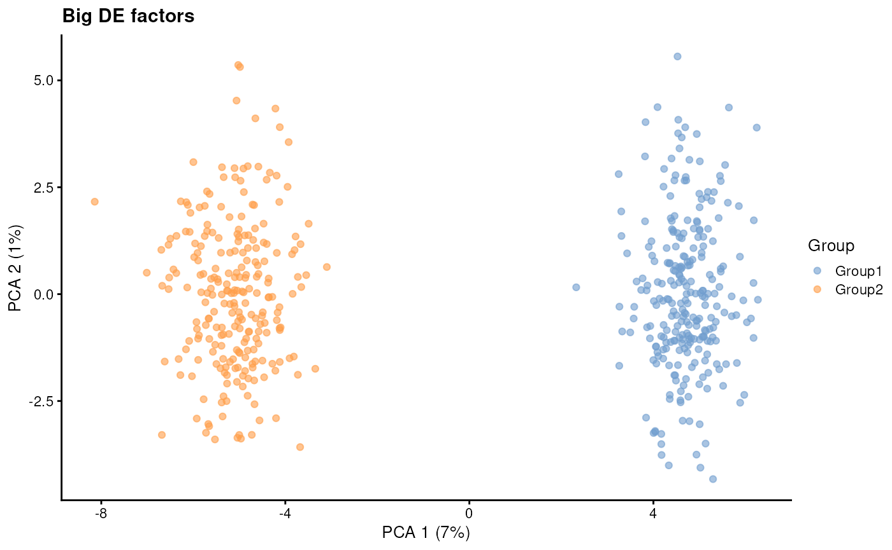
Just looking at the PCA plots this effect seems similar to adjusting
de.prob but the effect is achieved in a different way. A
higher de.prob means that more genes are differentially
expressed but changing the DE factors changes the level of DE for the
same number of genes.
Complex differential expression
Each of the differential expression parameters can be specified for
each group by providing a vector of values. These vectors must be the
same length as group.prob. Specifying parameters as vectors
allows more complex simulations where groups are more or less different
to each other rather than being equally distinct. Here are some examples
of different DE scenarios.
# Different DE probs
sim1 <- splatSimulateGroups(
params.groups,
group.prob = c(0.2, 0.2, 0.2, 0.2, 0.2),
de.prob = c(0.01, 0.01, 0.1, 0.1, 0.3),
verbose = FALSE
)
sim1 <- logNormCounts(sim1)
sim1 <- runPCA(sim1)
plotPCA(sim1, colour_by = "Group") +
labs(
title = "Different DE probabilities",
caption = paste(
"Groups 1 and 2 have very few DE genes,",
"Groups 3 and 4 have the default number,",
"Group 5 has many DE genes"
)
)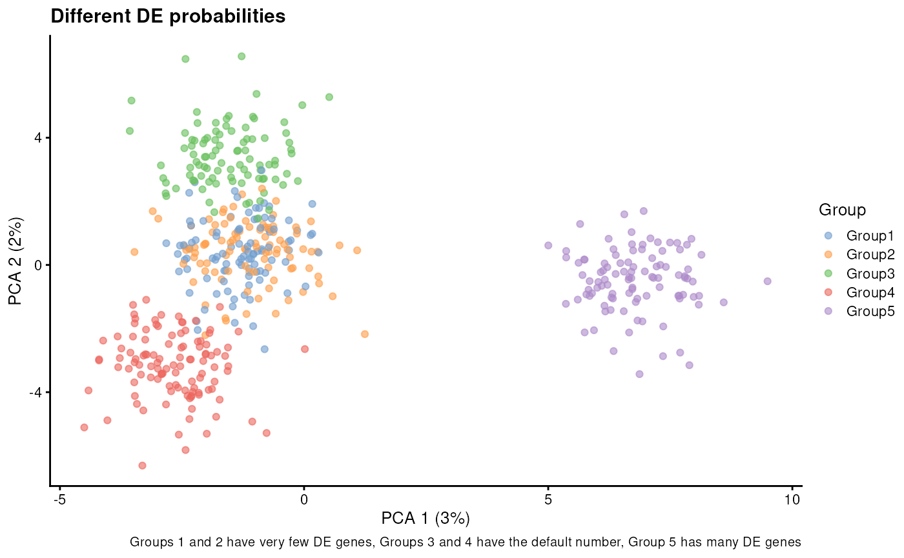
# Different DE factors
sim2 <- splatSimulateGroups(
params.groups,
group.prob = c(0.2, 0.2, 0.2, 0.2, 0.2),
de.facLoc = c(0.01, 0.01, 0.1, 0.1, 0.2),
de.facScale = c(0.2, 0.5, 0.2, 0.5, 0.4),
verbose = FALSE
)
sim2 <- logNormCounts(sim2)
sim2 <- runPCA(sim2)
plotPCA(sim2, colour_by = "Group") +
labs(
title = "Different DE factors",
caption = paste(
"Group 1 has factors with small location (value),",
"and scale (variability),",
"Group 2 has small location and greater scale.\n",
"Groups 3 and 4 have greater location with small,",
"and large scales",
"Group 5 has bigger factors with moderate",
"variability"
)
)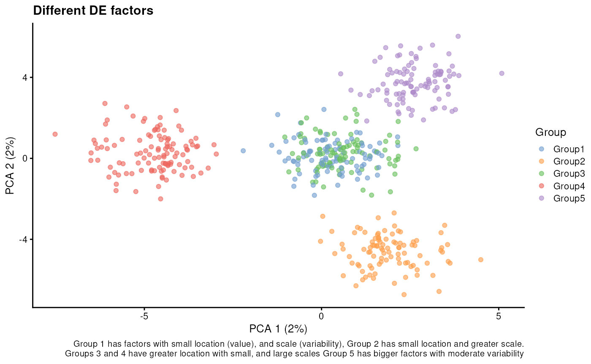
# Combination of everything
sim3 <- splatSimulateGroups(
params.groups,
group.prob = c(0.05, 0.2, 0.2, 0.2, 0.35),
de.prob = c(0.3, 0.1, 0.2, 0.01, 0.1),
de.downProb = c(0.1, 0.4, 0.9, 0.6, 0.5),
de.facLoc = c(0.6, 0.1, 0.1, 0.01, 0.2),
de.facScale = c(0.1, 0.4, 0.2, 0.5, 0.4),
verbose = FALSE
)
sim3 <- logNormCounts(sim3)
sim3 <- runPCA(sim3)
plotPCA(sim3, colour_by = "Group") +
labs(
title = "Different DE factors",
caption = paste(
"Group 1 is small with many very up-regulated DE genes,",
"Group 2 has the default DE parameters,\n",
"Group 3 has many down-regulated DE genes,",
"Group 4 has very few DE genes,",
"Group 5 is large with moderate DE factors"
)
)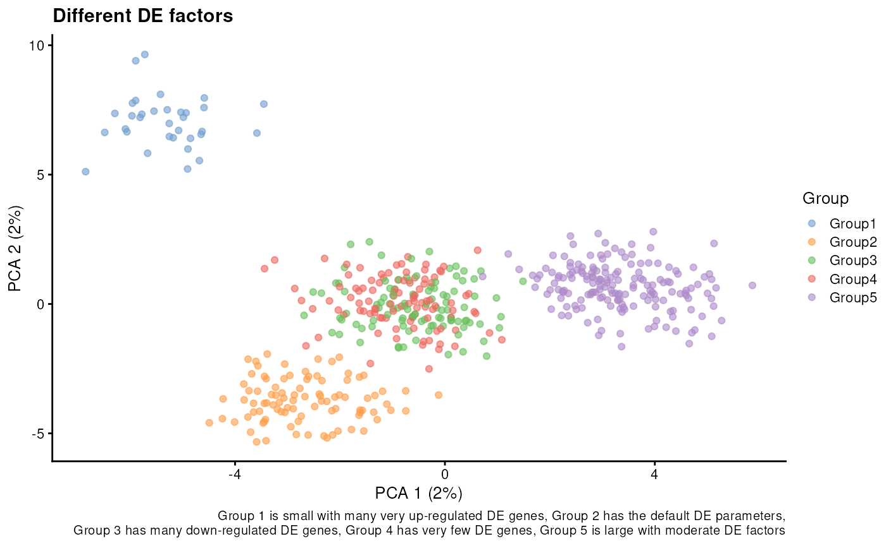
Biological Coefficient of Variation (BCV) parameters
The BCV parameters control the variability of the genes in the simulated dataset.
Dropout parameters
These parameters control whether additional dropout is added to increase the number of zeros in the simulated dataset and if it is how that is applied.
dropout.type - Dropout type
This parameter determines the kind of dropout effect to simulate.
Setting it to "none" means no dropout,
“experiment” is global dropout using the same set of
parameters for every cell, "batch" uses the same parameters
for every cell in the same batch, "group" uses the same
parameters for every cell in the same group and "cell" uses
a different set of parameters for every cell.
dropout.mid - Dropout mid point and
dropout.shape - Dropout shape
The probability that a particular count in a particular cell is set
to zero is related to the mean expression of that gene in that cell.
This relationship is represented using a logistic function with these
parameters. The dropout.mid parameter control the point at
which the probability is equal to 0.5 and the dropout.shape
controls how it changes with increasing expression. These parameters
must be vectors of the appropriate length depending on the selected
dropout type.
Path parameters
For many uses simulating groups is sufficient but in some cases it is
more appropriate to simulate continuous changes between cell types. The
number of paths and the probability of assigning cells to them is still
controlled by the group.prob parameter and the amount of
change along a path is controlled by the DE parameters but other aspects
of the splatSimulatePaths model are controlled by these
parameters.
path.from - Path origin
This parameter controls the order of differentiation paths. It is a
vector the same length as group.prob giving the starting
position of each path. For example a path.from of
c(0, 1, 1, 3) would indicate the Path 1 starts at the
origin (0), Path 2 starts at the end of Path 1, Path 3 also starts at
the end of Path 1 (a branch point) and Path 4 starts at the end of Path
3.
# Linear paths
sim1 <- splatSimulatePaths(
params.groups,
group.prob = c(0.25, 0.25, 0.25, 0.25),
de.prob = 0.5,
de.facLoc = 0.2,
path.from = c(0, 1, 2, 3),
verbose = FALSE
)
sim1 <- logNormCounts(sim1)
sim1 <- runPCA(sim1)
plotPCA(sim1, colour_by = "Group") + ggtitle("Linear paths")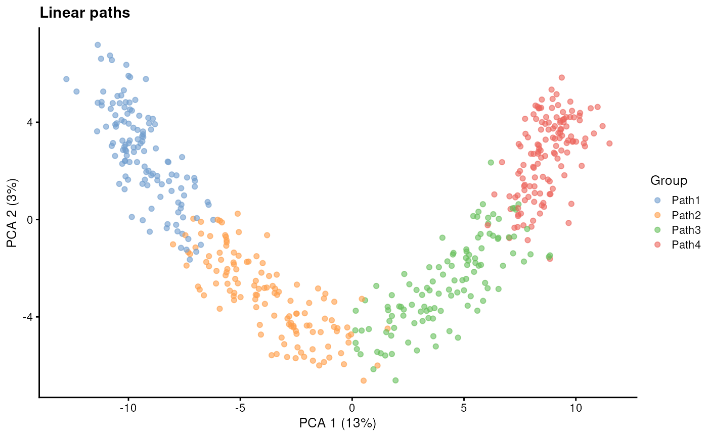
# Branching path
sim2 <- splatSimulatePaths(
params.groups,
group.prob = c(0.25, 0.25, 0.25, 0.25),
de.prob = 0.5,
de.facLoc = 0.2,
path.from = c(0, 1, 1, 3),
verbose = FALSE
)
sim2 <- logNormCounts(sim2)
sim2 <- runPCA(sim2)
plotPCA(sim2, colour_by = "Group") + ggtitle("Branching path")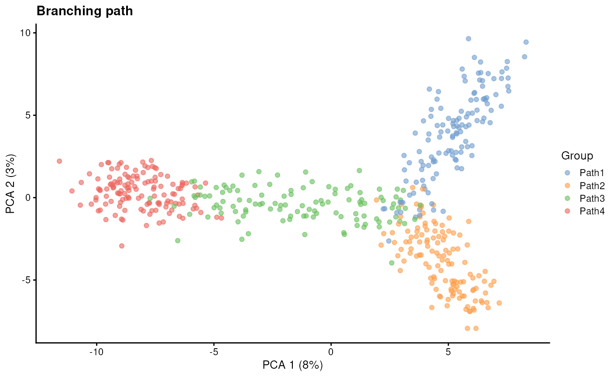
path.nSteps - Number of steps
A path is created by using the same differential expression procedure as used for groups to generate an end point. Interpolation is then used to create a series of steps between the start and end points. This parameter controls the number of steps along a path and therefore how discrete or smooth it is.
# Few steps
sim1 <- splatSimulatePaths(
params.groups,
path.nSteps = 3,
de.prob = 0.5,
de.facLoc = 0.2,
verbose = FALSE
)
sim1 <- logNormCounts(sim1)
sim1 <- runPCA(sim1)
plotPCA(sim1, colour_by = "Step") + ggtitle("Few steps")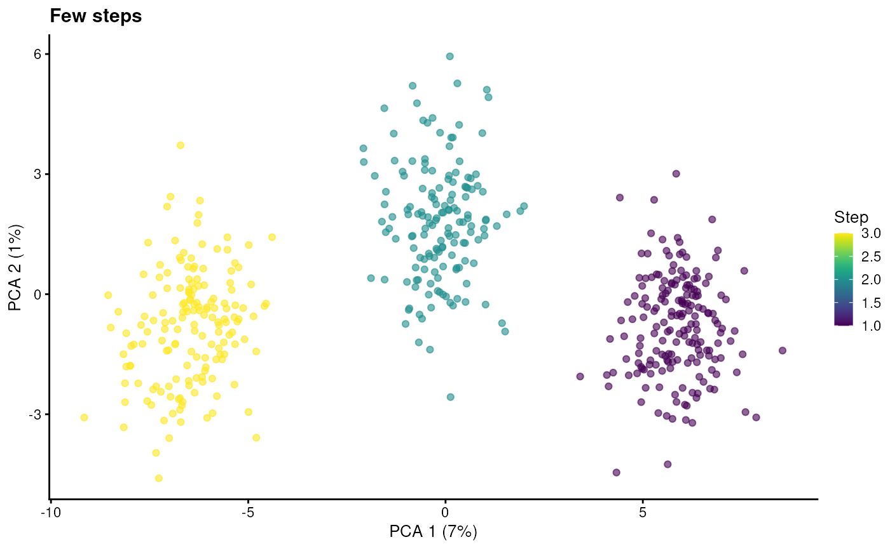
# Lots of steps
sim2 <- splatSimulatePaths(
params.groups,
path.nSteps = 1000,
de.prob = 0.5,
de.facLoc = 0.2,
verbose = FALSE
)
sim2 <- logNormCounts(sim2)
sim2 <- runPCA(sim2)
plotPCA(sim2, colour_by = "Step") + ggtitle("Lots of steps")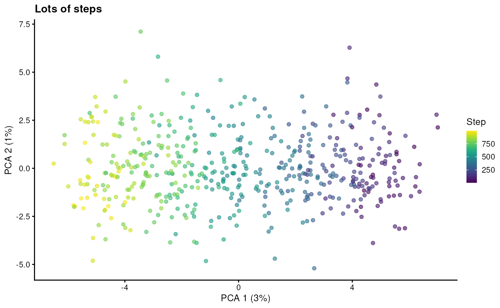
path.skew - Path skew
By default cells are evenly distributed along a path but it sometimes
be useful to introduce a skew in the distribution, For example you may
want to simulate a scenario with few stem-like cells and many
differentiated cells. Setting path.skew to 0 will mean that
all cells come from the end point while higher values up to 1 will skew
them towards the start point.
# Skew towards the end
sim1 <- splatSimulatePaths(
params.groups,
path.skew = 0.1,
de.prob = 0.5,
de.facLoc = 0.2,
verbose = FALSE
)
sim1 <- logNormCounts(sim1)
sim1 <- runPCA(sim1)
plotPCA(sim1, colour_by = "Step") + ggtitle("Skewed towards the end")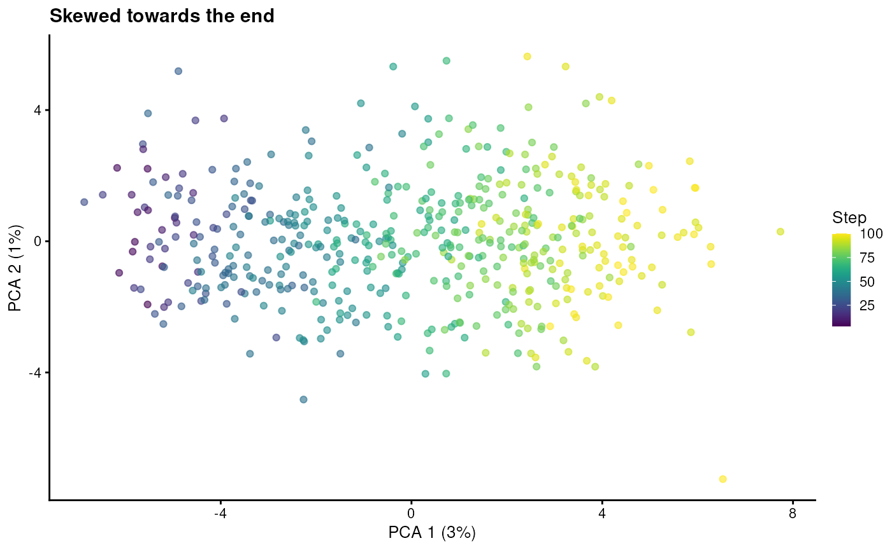
path.nonlinearProb - Non-linear probability
Most genes are interpolated in a linear way along a path but in
reality this may not always be the case. For example it is easy to
imagine a gene that is lowly-expressed at the start of a process,
highly-expressed in the middle and lowly-expressed again at the end. The
path.nonlinearProb parameter controls the probability that
a gene will change in a non-linear way along a path.
path.sigmaFac - Path skew
Non-linear changes along a path are achieved by building a Brownian
bridge between the two end points. A Brownian bridge is Brownian motion
controlled in such a way that the end points are fixed. The
path.sigmaFac parameter controls how extreme each step in
the Brownian motion is and therefore how much the interpolation differs
from a linear path.
Session information
sessionInfo()
#> R version 4.5.1 (2025-06-13)
#> Platform: x86_64-pc-linux-gnu
#> Running under: Ubuntu 24.04.2 LTS
#>
#> Matrix products: default
#> BLAS: /usr/lib/x86_64-linux-gnu/openblas-pthread/libblas.so.3
#> LAPACK: /usr/lib/x86_64-linux-gnu/openblas-pthread/libopenblasp-r0.3.26.so; LAPACK version 3.12.0
#>
#> locale:
#> [1] LC_CTYPE=en_US.UTF-8 LC_NUMERIC=C
#> [3] LC_TIME=en_US.UTF-8 LC_COLLATE=en_US.UTF-8
#> [5] LC_MONETARY=en_US.UTF-8 LC_MESSAGES=en_US.UTF-8
#> [7] LC_PAPER=en_US.UTF-8 LC_NAME=C
#> [9] LC_ADDRESS=C LC_TELEPHONE=C
#> [11] LC_MEASUREMENT=en_US.UTF-8 LC_IDENTIFICATION=C
#>
#> time zone: Etc/UTC
#> tzcode source: system (glibc)
#>
#> attached base packages:
#> [1] stats4 stats graphics grDevices utils datasets methods
#> [8] base
#>
#> other attached packages:
#> [1] scater_1.37.0 ggplot2_3.5.2
#> [3] scuttle_1.19.0 splatter_1.33.1
#> [5] SingleCellExperiment_1.31.1 SummarizedExperiment_1.39.1
#> [7] Biobase_2.69.0 GenomicRanges_1.61.1
#> [9] Seqinfo_0.99.2 IRanges_2.43.0
#> [11] S4Vectors_0.47.0 BiocGenerics_0.55.1
#> [13] generics_0.1.4 MatrixGenerics_1.21.0
#> [15] matrixStats_1.5.0 BiocStyle_2.37.1
#>
#> loaded via a namespace (and not attached):
#> [1] tidyselect_1.2.1 viridisLite_0.4.2 dplyr_1.1.4
#> [4] vipor_0.4.7 farver_2.1.2 viridis_0.6.5
#> [7] fastmap_1.2.0 digest_0.6.37 rsvd_1.0.5
#> [10] lifecycle_1.0.4 magrittr_2.0.3 compiler_4.5.1
#> [13] rlang_1.1.6 sass_0.4.10 tools_4.5.1
#> [16] yaml_2.3.10 knitr_1.50 S4Arrays_1.9.1
#> [19] labeling_0.4.3 htmlwidgets_1.6.4 DelayedArray_0.35.2
#> [22] RColorBrewer_1.1-3 abind_1.4-8 BiocParallel_1.43.4
#> [25] withr_3.0.2 desc_1.4.3 grid_4.5.1
#> [28] beachmat_2.25.4 scales_1.4.0 cli_3.6.5
#> [31] rmarkdown_2.29 crayon_1.5.3 ragg_1.4.0
#> [34] ggbeeswarm_0.7.2 cachem_1.1.0 parallel_4.5.1
#> [37] BiocManager_1.30.26 XVector_0.49.0 vctrs_0.6.5
#> [40] Matrix_1.7-3 jsonlite_2.0.0 bookdown_0.43
#> [43] BiocSingular_1.25.0 BiocNeighbors_2.3.1 ggrepel_0.9.6
#> [46] irlba_2.3.5.1 beeswarm_0.4.0 systemfonts_1.2.3
#> [49] locfit_1.5-9.12 jquerylib_0.1.4 glue_1.8.0
#> [52] pkgdown_2.1.3 codetools_0.2-20 cowplot_1.2.0
#> [55] gtable_0.3.6 ScaledMatrix_1.17.0 tibble_3.3.0
#> [58] pillar_1.11.0 htmltools_0.5.8.1 R6_2.6.1
#> [61] textshaping_1.0.1 evaluate_1.0.4 lattice_0.22-7
#> [64] backports_1.5.0 bslib_0.9.0 Rcpp_1.1.0
#> [67] gridExtra_2.3 SparseArray_1.9.1 checkmate_2.3.2
#> [70] xfun_0.52 fs_1.6.6 pkgconfig_2.0.3